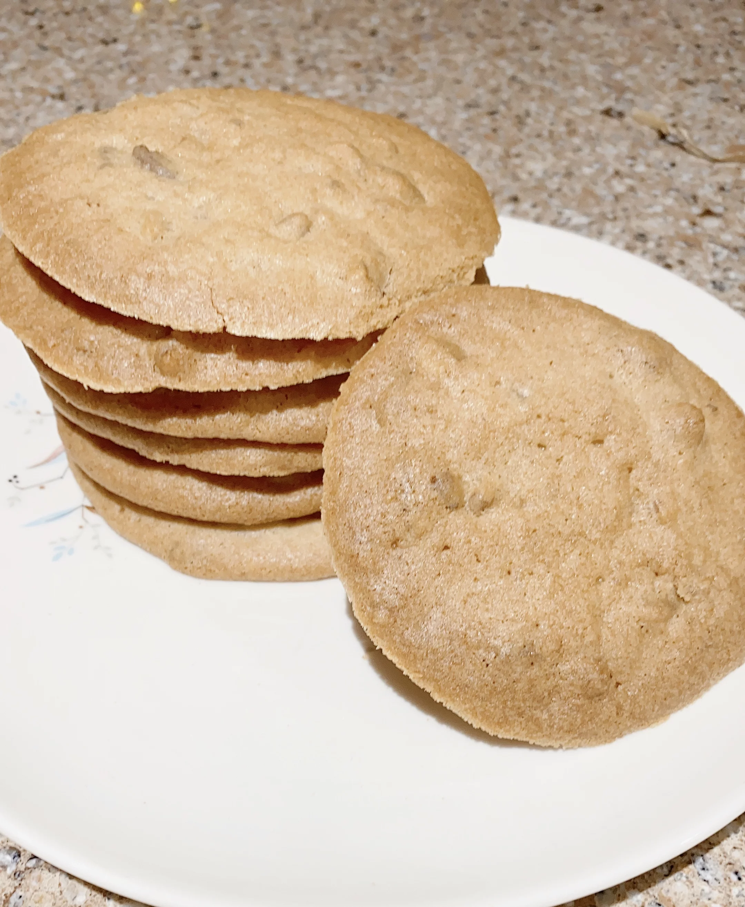

Cookie Recipe

Ingredients
- 1 cup unsalted butter, softened
- 1 cup brown sugar
- 1 cup white sugar
- 2 large eggs
- 2 teaspoons vanilla extract
- 1 teaspoon pecan oil, optional
- 2 cups all-purpose flour
- 1 teaspoon baking powder
- ⅛ teaspoon salt
- 1 cup finely chopped pecans
Directions
- Preheat the oven to 350 degrees F (175 degrees C). Line a baking sheet with parchment paper.
- Combine butter, brown sugar, and sugar in a bowl and cream with an electric mixer until light and fluffy, about 5 minutes. Add in eggs one at a time, beating well after each addition. Add vanilla extract and pecan oil and beat until well combined.
- Combine flour, baking powder, and salt in a separate bowl. Add the flour mixture to the bowl in 3 additions. Stir in pecans. Use a small cookie scoop to drop portions of dough 3 inches apart on the prepared baking sheet. These cookies spread.
- Bake in the preheated oven for 15 minutes. Increase heat to 375 degrees F (190 degrees C) and bake until edges turn golden, about 5 minutes more. Let cool on the baking sheet for 5 minutes before removing to racks to cool completely.
Home